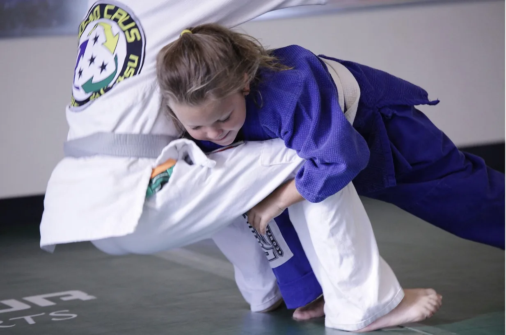

You cannot stand beside your child in every hard moment.
Meta creative wave · 9 concepts
Three hooks. One matched page.
Each concept earns the click with a different emotional entry point. The advertorial continues the same belief before asking the parent to find a class.

Static 4:5
ProtectionCold parent
Primary text
You cannot be present for every pool party, playground problem, or moment your child feels physically overwhelmed. Two skills can give them a practiced response when you are not there: swimming and jiu-jitsu.
Headline
Two Skills for When You Aren't There
Description
Why our family treats both as core life skills.

Static 4:5
ProtectionProblem aware
Primary text
Good parenting is not creating a world with no hard moments. It is helping children build a response before the hard moment arrives.
Headline
Prepare Them, Don't Frighten Them
Description
A calmer way to think about practical childhood skills.

Reel 20 sec
ProtectionVideo
Primary text
At first, protection comes from you. Over time, it also becomes the skills your child can use without you.
Headline
Turn Protection Into a Practiced Skill
Description
See why swimming and jiu-jitsu belong together.
20-second storyboard
0–4s
Parent watching class5–12s
Child pauses, taps, resets13–20s
Belief + advertorial CTA
Parent watching class5–12s
Child pauses, taps, resets13–20s
Belief + advertorial CTA
Static 4:5
ComposureContrarian
Primary text
Jiu-jitsu is not valuable because we expect children to fight. It is valuable because pressure becomes familiar enough to pause, think, communicate, and try a trained response.
Headline
Teach a Response Before They Need It
Description
Calm is easier to access when it has been practiced.
Static 4:5
ComposureMechanism
Primary text
A child cannot learn composure from a speech alone. They build it through small, coached moments: stop, breathe, listen, move, reset, try again.
Headline
Confidence Is a Practiced Response
Description
Inside the shared lesson behind two life skills.
Reel 25 sec
ComposureVideo
Primary text
Swimming and jiu-jitsu look completely different. Under pressure, they teach a surprisingly similar sequence.
Headline
The Shared Lesson Nobody Talks About
Description
Body control, composure, and a practiced next move.
25-second storyboard
0–6s
Water ripple + mat texture7–17s
Stop, breathe, orient, move18–25s
Joao coaching + CTA
Water ripple + mat texture7–17s
Stop, breathe, orient, move18–25s
Joao coaching + CTA

Static 4:5
Family beliefBold opener
Primary text
Swimming and jiu-jitsu are not activities we chose just to fill a calendar. We treat them as core life skills. One teaches water competence. The other gives children a place to practice boundaries, body control, and composure under pressure.
Headline
Why We Call Both Mandatory
Description
A parent's case for two practical childhood skills.
Static 4:5
Family beliefIdentity
Primary text
Some activities entertain. Some build fitness. A few teach children how to respond when their body and emotions are under pressure. Those are the ones we protect time for.
Headline
The Skills We Refuse to Call Optional
Description
A practical filter for an already crowded family calendar.
Founder video
Family beliefAuthority
Primary text
When parents ask what jiu-jitsu is really for, start here: it gives children a safe place to feel pressure, communicate a boundary, solve a physical problem, and try again with coaching.
Headline
Two Skills. One Deeper Lesson.
Description
Read the full case, then find the right class.
30-second founder cut
0–7s
Joao states the question8–21s
Real class mechanism22–30s
Invitation to read
Joao states the question8–21s
Real class mechanism22–30s
Invitation to read